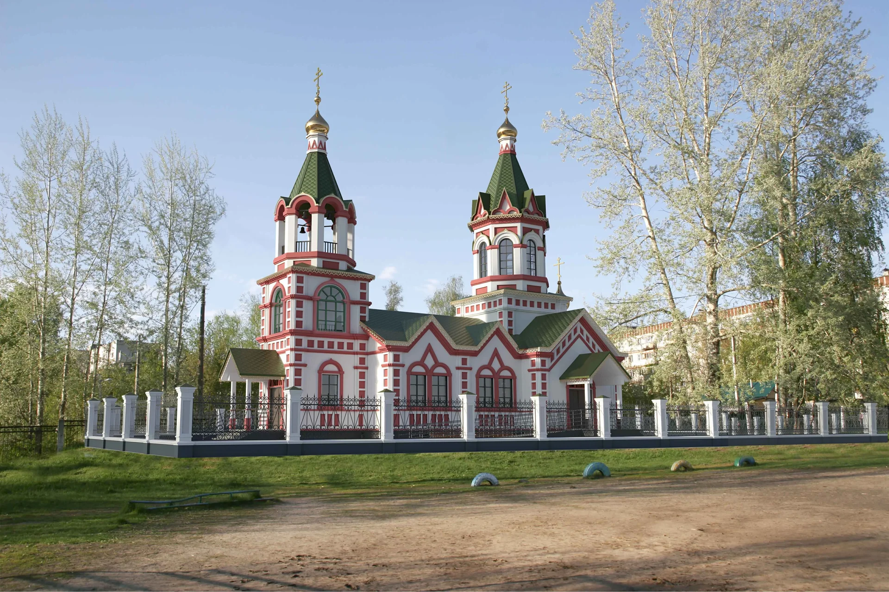
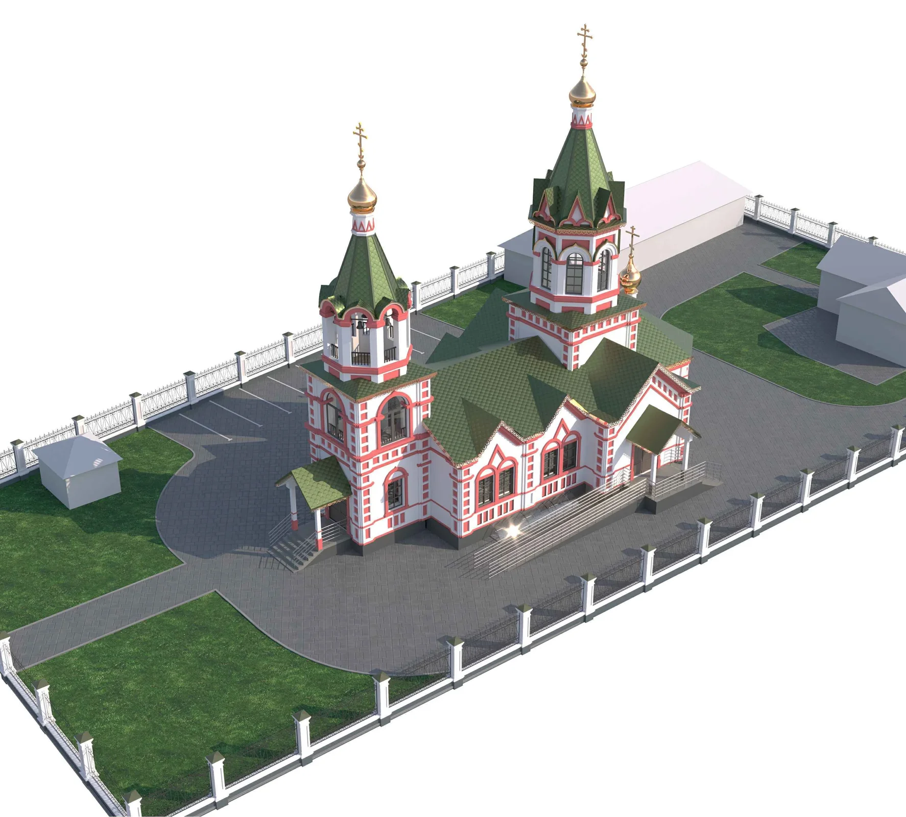

Храм ещё строится.
Это наше общее дело.
Собираем сведения о текущем этапе, чтобы делиться с вами точной картиной строительства.
Храм строится
Мы строим храм на улице Берёзовской в Нижнем Новгороде. Место молитвы, встречи и живой связи поколений.

От первых работ до первого колокольного звона —
сохраняем историю строительства вместе.
01 / Дневник строительства
Здесь будут появляться подтверждённые сведения о работах, фотографии и планы следующего этапа.
Собираем сведения о текущем этапе, чтобы делиться с вами точной картиной строительства.
Первые фотографии с площадки будут опубликованы вместе с датой съёмки и описанием работ. Изображения проекта ниже показывают будущий храм.
02 / Архитектурный проект
Шатровый храм с колокольней, выразительным красно-белым декором и зелёной кровлей.

Храм на Берёзовской
На улице Берёзовской, в Московском районе Нижнего Новгорода, мы строим храм, который станет домом молитвы для новой общины. Его образ обращён к традициям русского церковного зодчества: устремлённые ввысь шатры, стройная колокольня и золотые главки с крестами складываются в узнаваемый силуэт.
Белые стены подчёркивают красный узор фасадов. Арочные окна, фигурные завершения и пояса орнамента придают зданию нарядность, а зелёная кровля связывает его с окружающими деревьями. Красоту этого проекта хочется рассматривать в деталях — от рисунка ограды до открытых арок колокольни, где однажды зазвучат колокола.
За выразительным обликом — продуманное устройство храма: два этажа, включая подклет, и общая площадь 324,9 м². На визуализациях можно увидеть входы с крыльцами, дорожки и ограждённую территорию. Так постепенно складывается образ места, куда люди будут приходить на богослужение, приводить детей и встречаться с общиной.
Пока этот образ воплощается в строительстве, у каждого есть возможность стать частью его истории. Материалы, работа, профессиональные знания или посильное пожертвование помогут приблизить день, когда храм откроет двери. Узнать, как участвовать в общем деле →
Источник: комплект АР 0143.03.2023. ООО «Творческая мастерская архитектора Иняева А. А.». Показатели описывают проект, а не готовность строительства.
03 / Заречная община
Заречная община Русской Православной старообрядческой Церкви города Нижнего Новгорода.
Совместные дела, встречи и люди, которые участвуют в созидании храма. Здесь мы будем рассказывать о жизни общины.
Воспоминания, семейные истории и фотографии старообрядческого Нижнего Новгорода. Приглашаем участников общины поделиться своим архивом.
Знакомство с верой и богослужением можно начать с материалов «Нашей веры» ↗ и сайта митрополии РПСЦ ↗.
04 / Первый шаг
Если вы только знакомитесь со старой верой, начните с простых вопросов. Для первого разговора не нужно знать всё заранее.
Храм на Берёзовской ещё строится. Строительная площадка не является местом свободного посещения. Возможность встречи и место молитвы нужно заранее уточнить у представителей общины.
Подтверждённое расписание и место богослужений общины ещё не опубликованы на сайте. Когда сведения будут уточнены, они появятся здесь.
Посмотрите просветительские материалы «Нашей веры». Личные вопросы о церковной жизни лучше обсудить со священником.
Да. Подготовьте рассказ, подписи к фотографиям и сведения об их происхождении. Перед публикацией редактор общины согласует с вами текст и разрешение на использование материалов.
05 / Участие
Помощь бывает разной.
Каждый вклад имеет значение.
Конкретные потребности строительства, реквизиты и отчёты будут публиковаться после подтверждения общиной.
Будем на связи
Нижний Новгород, Московский район.
Будущий храм — на улице Берёзовской.
Публичные контакты ответственного представителя общины будут размещены после согласования.
Для посещения строительной площадки необходимо предварительное согласование.